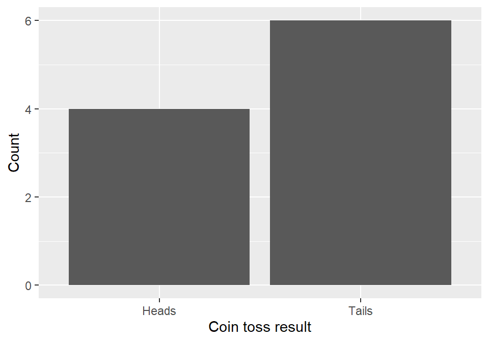
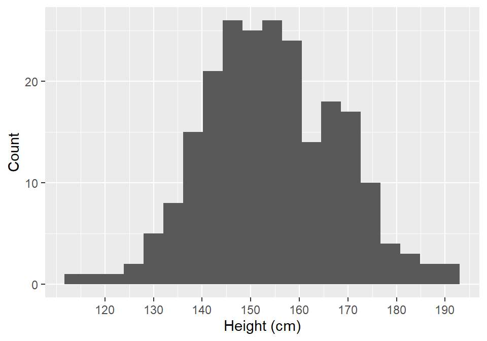

“a mathematical function showing the number of instances in which a variable takes each of its possible values.”
ggplot language - also includes size, colours etc.)geoms in ggplot language; i.e. bars, points, lines)

| ID | Degree | StatsScore |
|---|---|---|
| ID101 | Phil | 66 |
| ID102 | Joint | 62 |
| ID103 | Joint | 66 |
| ID104 | Psych | 70 |
| ID105 | Psych | 67 |
| ID106 | Phil | 51 |
| ID107 | Ling | 52 |
| ID108 | Psych | 77 |
| ID109 | Psych | 66 |
| ID110 | Ling | 70 |
\[ \frac{1}{2}(N+1) \]
\[ \frac{\frac{1}{2}N + (\frac{1}{2}N+1)}{2} \]
\[ \bar{x} = \frac{\sum_{i=1}^{N}{x_i}}{N} \]
\[ \bar{x} = \frac{\sum_{i=1}^{N}{x_i}}{N} \]
\[ \bar{x} = \frac{\sum_{i=1}^{N}{x_i}}{N} \]
| Measure | Strength | Weakness |
|---|---|---|
| Mode | Actually occurs in our data | Not algebraically calculable |
| Unaffected by extreme values | Probably does not exist for true continuous data (think reaction time) | |
| Median | No assumptions about interval value of data | Not relatable to measures of dispersion (see next week) |
| Unaffected by extreme values | ||
| Mean | Algebraically tractable | Sensitive to extreme values |
| Related to measures of dispersion (see next week) | Assumes data are interval or better | |
| Possible no case in your data takes the value of the mean |
| Variable Type | Central Tendency |
|---|---|
| Categorical (Nominal) | Mode |
| Categorical (Ordered) | Mode/Median |
| Continuous | Mean (any in fact) |
| Count | Mode (mean) |